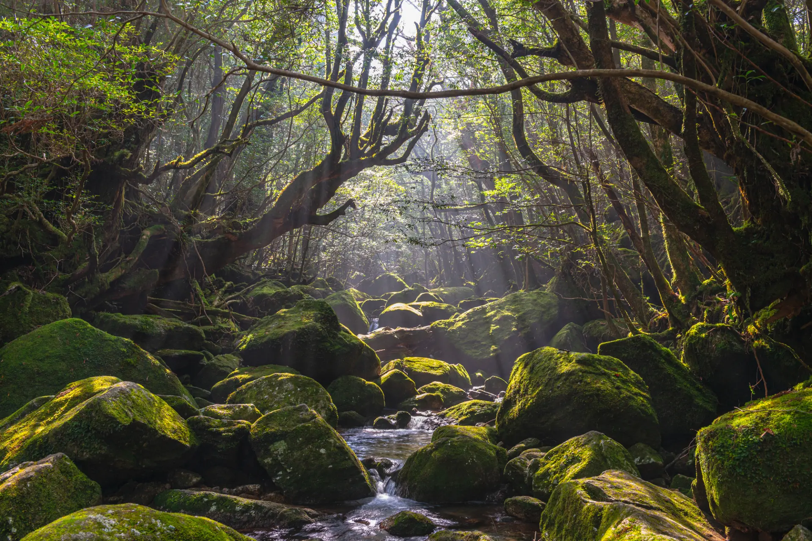
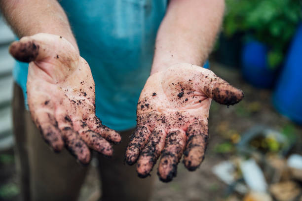
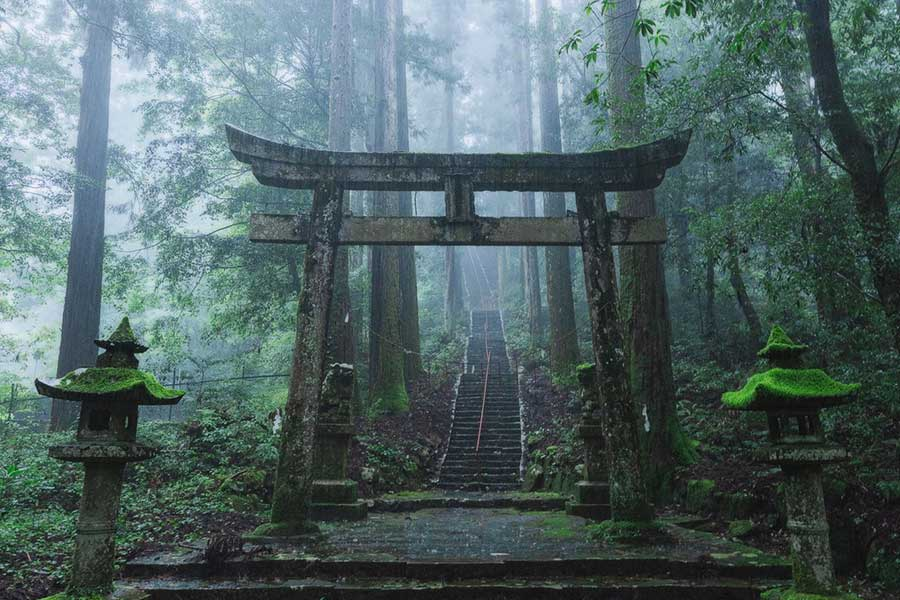

日本 / 屋久島
苔むす森に、神は宿る。
樹齢千年を超える屋久杉が霧の中に立ち、苔むした岩の間を清水が流れる。古来より人々はこの森に神の気配を感じ、祈りを捧げてきた。八百万の神という思想は、こうした自然そのものへの畏敬から生まれている。

樹齢千年を超える屋久杉が霧の中に立ち、苔むした岩の間を清水が流れる。古来より人々はこの森に神の気配を感じ、祈りを捧げてきた。八百万の神という思想は、こうした自然そのものへの畏敬から生まれている。

密林の中に突如そびえる巨岩シーギリヤ。かつて王が宮殿を築いたこの地には、今も無数の神々の伝承が息づく。大地の奥深くに眠る宝石もまた、神々からの贈り物として語り継がれてきた。
1951年、サンフランシスコ講和会議。敗戦国・日本の処遇を巡り各国の意見が対立するなか、スリランカ代表J・R・ジャヤワルデナは「憎悪は憎悪によって鎮まらず、愛によってのみ鎮まる」と説き、日本への賠償請求権を放棄。この演説は、日本の国際社会復帰を後押しした史実として今も語り継がれている。
生年月日・出生時刻・出生地から、あなたの星の配置を読み解く。占星術師による鑑定は、宝石選びの入り口であると同時に、自分自身と向き合う最初の一歩でもある。

鑑定で導き出された石を求め、スリランカの大地へ。泥にまみれ、自らの手で掘り起こす原石には、産地でしか出会えない一期一会の輝きが宿る。
採れた原石を日本で研磨・加工し、完全オーダーメイドのジュエリーへ。渡すその日から、その先の何十年へ——物語は石とともに受け継がれていく。
私たちは、物を売っているのではない。
ジュエリーを手にした先にある「人生の節目」という
“物語”を、お届けしている。

スリランカと日本の神々が驚くほど似た役割を持つという発見を軸に、今の自分自身に必要な神様と出会う旅。文化・神話への知的な憧れを、自分用のジュエリー・人生の節目・お守りへと結びます。
View Myth
星と大地が石を選び、あなたはそれを受け取るだけ。かけた時間が大切な人との物語をつなぐ、マリッジリング・記念日の贈り物のための旅です。
View Vow
大切な人へ受け継ぐ、いつか渡すための旅。受け継ぐ・遺すという感情を軸に、子や孫への継承・人生の節目のための一本を仕立てます。
View Legacy可能です。鑑定のみのお申込みも承っております。鑑定結果をもとに、採掘体験やジュエリープランは後日ご案内いたします。
必須ではありません。現地採掘のほか、渡航不要のバーチャル採掘（オンライン完結）もお選びいただけます。
採掘は最大3回まで実施し、出た石の中からお選びいただきます。それでも出なかった場合は、過去に採掘された石からご案内いたします。契約金額分の石は必ずご用意いたします。
各プランの料金は個別にお問い合わせください。占星術鑑定料金（30,000円・税込）のみ、鑑定申込フォームに表示しております。
本サービスは資産運用・投資を目的としたものではなく、将来価値をお約束するものではございません。